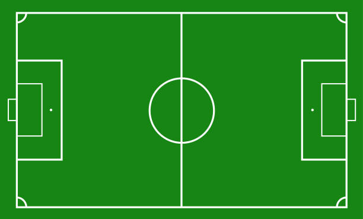

Santos
Sempre
Santos
The history of Santos
The history of Santos Futebol Clube goes from the football club's founding in 1912 and up to current time. Santos FC, also known simply as "Santos" and familiarly as "Peixe", is based in Santos, São Paulo, Brazil. The team was founded on April 14, 1912, by the initiative of three sports enthusiasts from Santos: Raimundo Marques, Mário Ferraz de Campos, and Argemiro de Souza Júnior. In 1962, the club participated in their first of many South American competitions, and has since amassed seven CONMEBOL trophies and a quadruple. In 1971, Santos co-founded the Campeonato Brasileiro Série A, the top-tier in Brazil football, along with a string of other clubs.
2 Intercontinental Cup
3 Copa Libertadores
8 Campeonato Brasileiro Série A
22 Campeonato Paulista
After 50 years Santos began to be seen as the best team in the world. When Pelé made his debut in the Campeonato Paulista in 1957, the team was already twice state champion (1955/56). The King had as fellow players Zito, Pagão, Formiga, Hélvio, Jair da Rosa Pinto, Urubatão, Tite and Pepe. Santos won the third state title in 50 years, the magical year of 1958 – in which Brazil won the World Cup in Sweden, with Zito Santos, Pelé and Pepe, and won in spectacular fashion. Santos scored 143 goals in 38 games, averaging 3.76 per game, and conceded only 40 goals. Pelé set a record that has never been equaled in any state competition in the country: he scored no less than 58 goals. Santos' traditional rivals were heavily beaten in 1958, particularly a 10–0 win against the Nacional. In addition to state titles, Santos won the Rio-São Paulo in 1959, beating Vasco in the final by 3–0 with two goals by Coutinho, who was only 16 years old. Coutinho also scored five goals against Ponte Preta, and Santos won the game by 12–1 even without Pelé.
News

Team

Soccer